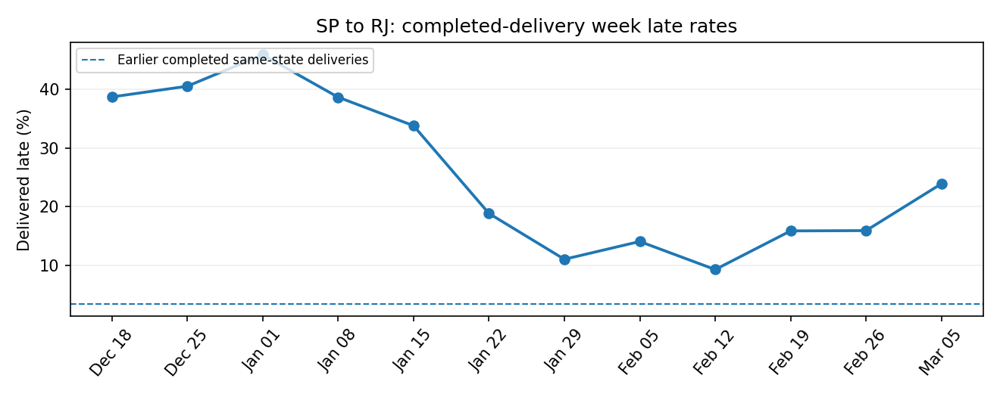
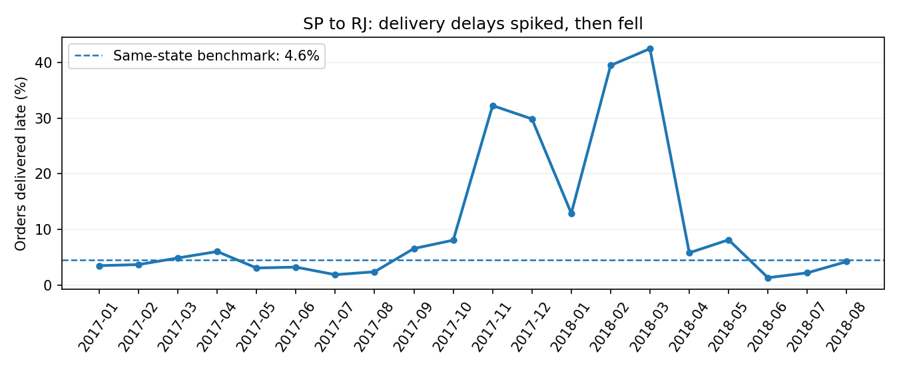
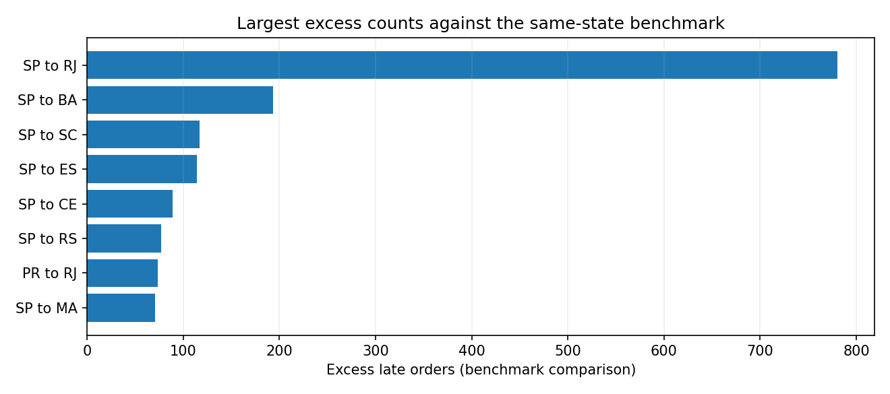
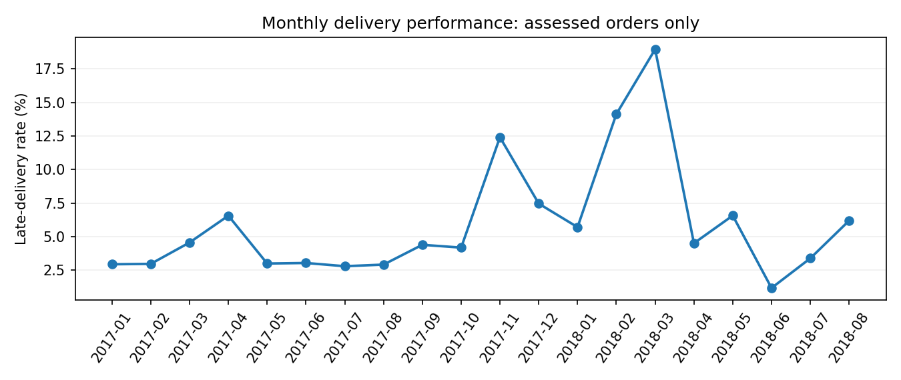

Which shipping lanes need attention first? Rank delays by affected orders, not only by the highest late rate.
2018-03-05 through the following six days; outcomes were known only after deliveries were completed. Of 1,556 completed single-seller deliveries, 122 were late (7.8%). The benchmark from earlier completed same-state deliveries was 3.4%.
Flagged lanes (2): SP → RJ, SP → MG. An alert is a retrospective detection at the end of the delivery week, not an advance prediction on purchase day.

| Lane | Completed | Late | Rate |
|---|---|---|---|
| SP → SP | 466 | 26 | 5.6% |
| SP → RJ | 92 | 22 | 23.9% |
| SP → MG | 119 | 11 | 9.2% |
| SP → DF | 33 | 6 | 18.2% |
| SP → RS | 75 | 5 | 6.7% |
| PR → RJ | 27 | 4 | 14.8% |
| MG → RJ | 13 | 4 | 30.8% |
| PR → SP | 81 | 3 | 3.7% |
Across 96,470 assessed deliveries, 6,534 were late (6.8%), representing R$ 985,924 in merchandise value associated with late deliveries. This full-history view uses the complete historical extract and is not restricted to what was known at this replay week.
1,147 of 8,048 assessed orders were late (14.3%), versus 4.6% for same-state deliveries. This is roughly 780 excess late orders at that benchmark. Against other cross-state lanes (7.2%), the gap is about 567 orders. The lane accounts for 17.6% of all late orders and R$ 152,858 in late-order merchandise value.
Late performance reached 42% in March 2018, then fell. Monitor the lane weekly; review carrier and promise-setting records when it crosses the alert threshold.

RJ customers account for 1,495 late orders (22.9% of all late deliveries). The top five lanes have roughly 1,294 excess late orders compared with the same-state benchmark.

| Lane | Assessed | Late | Late rate | Excess vs benchmark |
|---|---|---|---|---|
| SP → RJ | 8,048 | 1,147 | 14.3% | 780 |
| SP → BA | 2,278 | 297 | 13.0% | 193 |
| SP → SC | 2,306 | 222 | 9.6% | 117 |
| SP → ES | 1,444 | 180 | 12.5% | 114 |
| SP → CE | 961 | 133 | 13.8% | 89 |
| SP → RS | 3,540 | 238 | 6.7% | 77 |
| PR → RJ | 951 | 117 | 12.3% | 74 |
| SP → MA | 486 | 93 | 19.1% | 71 |

Source: prepared Olist extract (2016–2018). 8 orders in this extract lack an assessable delivered date. The prepared extract is not the full Olist order universe. Multi-seller orders are excluded from lane analysis. Excess orders are a benchmark comparison, not a causal estimate or committed savings. Late-order GMV is merchandise associated with delay, not revenue lost. Historical replay is not live incoming data.